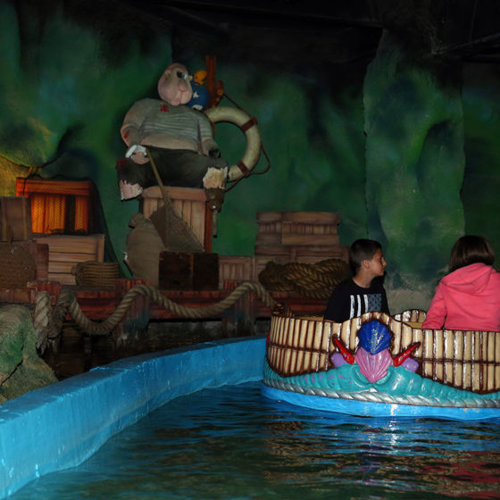

Opened
1995
Builder
WGH Ltd
Price
£5.00
Included with Any Wristband
About this Ride
The Magical Seaquarium is an enchanting boat ride that opened in 1995. Built by WGH Ltd with themed scenery by Attraction Projects International Ltd, riders journey in bamboo-themed boats along an artificial river. The experience features vibrant underwater scenes enhanced by UV lighting, animated elements, and an energetic soundtrack that brings the aquatic world to life.